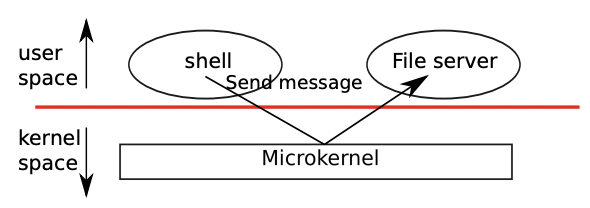

Operating system organization
A key requirement for an operating system is to support several activities at once. For example, using the system call interface described in chapter 0 a process can start new processes with fork. The operating system must time-share the resources of the computer among these processes. For example, even if there are more processes than there are hardware processors, the operating system must ensure that all of the processes make progress. The operating system must also arrange for isolation between the processes. That is, if one process has a bug and fails, it shouldn’t affect processes that don’t depend on the failed process. Complete isolation, however, is too strong, since it should be possible for processes to interact; pipelines are an example. Thus an operating system must fulfil three requirements: multiplexing, isolation, and interaction.
운영체제의 중요한 요구사항 중 하나는 여러 동작을 동시에 지원하는 것입니다. 예를 들어, 챕터 0에서 설명한 시스템콜 인터페이스를 사용하면 프로세스는 fork를 사용하여 새로운 프로세스를 시작할 수 있습니다. 운영체제는 컴퓨터의 자원을 이러한 프로세스들 사이에서 시분할해야 합니다. 예를 들어, 하드웨어 프로세서보다 더 많은 프로세스가 있는 경우라도, 운영체제는 모든 프로세스가 진행되도록 보장해야 합니다. 또한, 운영체제는 프로세스 간의 격리를 조율해야합니다. 즉, 한 프로세스에 버그가 있고 실패하는 경우에도 해당 프로세스에 의존하지 않는 다른 프로세스에 영향을 미치면 안됩니다. 하지만 완전한 격리는 지나치게 강력합니다. 왜냐하면 프로세스가 상호작용할 수 있어야 하기 때문입니다. 예를 들어, 파이프라인이 그런 예입니다. 따라서 운영체제는 세 가지 요구 사항을 충족해야 합니다: 멀티플렉싱, 격리 그리고 상호작용
This chapter provides an overview of how operating systems are organized to achieve these 3 requirements. It turns out there are many ways to do so, but this text focuses on mainstream designs centered around a monolithic kernel, which is used by many Unix operating systems. This chapter introduces xv6’s design by tracing the creation of the first process when xv6 starts running. In doing so, the text provides a glimpse of the implementation of all major abstractions that xv6 provides, how they interact, and how the three requirements of multiplexing, isolation, and interaction are met. Most of xv6 avoids special-casing the first process, and instead reuses code that xv6 must provide for standard operation. Subsequent chapters will explore each abstraction in more detail.
이 장에서는 운영체제가 이러한 3가지 요구 사항을 충족하기 위해 어떻게 구성되는지에 대한 개요를 제공합니다. 실제로 이를 달성하기 위한 다양한 방법이 있지만, 이 교과서는 유닉스 운영체제를 사용하는 많은 운영체제에서 사용되는 모놀리식 커널을 중심으로 한 주류 디자인에 초점을 맞추고 있습니다. 이 장에서는 xv6이 실행되기 시작할 때 첫 번째 프로세스가 생성되는 과정을 따라가며 xv6이 제공하는 모든 주요 추상화의 구현을 엿볼 수 있도록 합니다. 이를 통해 이 텍스트는 이러한 추상화가 어떻게 상호작용하며 다중화, 격리 및 상호작용이라는 세 가지 요구 사항이 어떻게 충족되는지를 보여줍니다. xv6의 대부분은 첫 번째 프로세스에 대해 특별한 경우를 회피하고 대신 표준 작동을 위해 xv6이 제공해야 하는 코드를 재사용합니다. 이어지는 장에서는 각 추상화를 더 자세히 탐구할 것입니다.
Xv6 runs on Intel 80386 or later (x86) processors on a PC platform, and much of its low-level functionality (for example, its process implementation) is x86-specific. This book assumes the reader has done a bit of machine-level programming on some architecture, and will introduce x86-specific ideas as they come up. Appendix A briefly outlines the PC platform.
xv6는 인텔 80386 이상 (x86) 프로세서가 장착된 PC 플랫폼에서 실행됩니다. 그리고 그 중 많은 저수준 기능(예: 프로세스 구현)은 x86 아키텍처에 특화되어 있습니다. 이 책은 독자가 어떤 아키텍처에서 조금의 머신 레벨 프로그래밍을 해본 경험이 있다고 가정하며, x86 특정 아이디어를 필요에 따라 소개할 것입니다. 부록 A에서는 PC 플랫폼에 대한 간략한 개요가 제공됩니다.
Abstracting physical resources
The first question one might ask when encountering an operating system is why have it at all? That is, one could implement the system calls in Figure 0-2 as a library, with which applications link. In this plan, each application could even have its own library tailored to its needs. Applications could directly interact with hardware resources and use those resources in the best way for the application (e.g., to achieve high or predictable performance). Some operating systems for embedded devices or real-time systems are organized in this way.
운영체제를 만나게 되면 사람들이 처음으로 묻는 질문 중 하나는 왜 운영체제가 필요한가요? 즉, Figure 0-2의 시스템 콜을 라이브러리로 구현하여 애플리케이션이 링크하는 방식으로 할 수 있습니다. 이 계획에서 각 애플리케이션은 심지어 자신의 Bed를 제작할 수 있는 라이브러리를 가질 수 있습니다. 애플리케이션은 하드웨어 리소스와 직접 상호작용하며 해당 리소스를 애플리케이션에 가장 적합한 방식으로 사용할 수 있습니다(예: 높은 또는 예측 가능한 성능을 달성하기 위해). 임베디드 장치나 실시간 시스템용 일부 운영체제는 이와 같은 방식으로 구성됩니다.
The downside of this library approach is that, if there is more than one application running, the applications must be well-behaved. For example, each application must periodically give up the processor so that other applications can run. Such a cooperative time-sharing scheme may be OK if all applications trust each other and have no bugs. It’s more typical for applications to not trust each other, and to have bugs, so one often wants stronger isolation than a cooperative scheme provides.
이 라이브러리 접근 방식의 단점은, 여러 애플리케이션이 실행 중인 경우 애플리케이션들이 잘 동작해야 한다는 점입니다. 예를 들어, 각 애플리케이션은 주기적으로 프로세서를 양보하여 다른 애플리케이션이 실행될 수 있도록 해야 합니다. 이러한 협력적인 시분할 체계는 모든 애플리케이션이 서로 신뢰하고 버그가 없다면 괜찮을 수 있습니다. 그러나 애플리케이션이 서로 신뢰하지 않거나 버그가 있을 가능성이 더 크므로, 종종 협력적인 체계보다 더 강력한 격리가 필요합니다.
To achieve strong isolation it’s helpful to forbid applications from directly accessing sensitive hardware resources, and instead to abstract the resources into services. For example, applications interact with a file system only through open, read, write, and close system calls, instead of read and writing raw disk sectors. This provides the application with the convenience of pathnames, and it allows the operating system (as the implementor of the interface) to manage the disk.
강력한 격리를 달성하기 위해서는 애플리케이션이 민감한 하드웨어 리소스에 직접 접근하는 것을 금지하고 대신 리소스를 서비스로 추상화하는 것이 유용합니다. 예를 들어, 애플리케이션은 파일 시스템과 상호작용할 때 원시 디스크 섹터를 직접 읽거나 쓰는 대신 open, read, write, close 시스템 콜을 통해 상호작용합니다. 이렇게 하면 애플리케이션은 경로명의 편의성을 활용할 수 있으며, 운영체제(인터페이스의 구현자로서)가 디스크를 관리할 수 있습니다.
Similarly, Unix transparently switches hardware processors among processes, saving and restoring register state as necessary, so that applications don’t have to be aware of time sharing. This transparency allows the operating system to share processors even if some applications are in infinite loops.
비슷하게, 유닉스는 필요한 경우 레지스터 상태를 저장하고 복원하여 프로세스 간에 하드웨어 프로세서를 투명하게 전환하여 애플리케이션이 시분할을 인식할 필요가 없도록 합니다. 이러한 투명성 덕분에 운영체제는 일부 애플리케이션이 무한 루프에 있더라도 프로세서를 공유할 수 있습니다.
As another example, Unix processes use exec to build up their memory image, instead of directly interacting with physical memory. This allows the operating system to decide where to place a process in memory; if memory is tight, the operating system might even store some of a process’s data on disk. Exec also provides users with the convenience of a file system to store executable program images.
또 다른 예로, 유닉스 프로세스는 물리적 메모리와 직접 상호작용하는 대신 메모리 이미지를 빌드업하기 위해 exec를 사용합니다. 이로써 운영체제는 프로세스를 메모리에 어디에 배치할지를 결정할 수 있습니다. 메모리가 부족한 경우, 운영체제는 프로세스의 일부 데이터를 디스크에 저장할 수도 있습니다. (역자: page in/page out 참고) Exec는 또한 사용자에게 실행 가능한 프로그램 이미지를 저장하기 위한 파일 시스템의 편의성을 제공합니다.
Many forms of interaction among Unix processes occur via file descriptors. Not only do file descriptors abstract away many details (e.g. where data in a pipe or file is stored), they also are defined in a way that simplifies interaction. For example, if one application in a pipeline fails, the kernel generates end-of-file for the next process in the pipeline.
유닉스 프로세스 간의 다양한 상호작용 형태는 파일 디스크립터를 통해 이루어집니다. 파일 디스크립터는 많은 세부 사항들(예: 파이프나 파일의 데이터가 어디에 저장되는지)을 추상화하는데 사용되며, 또한 상호작용을 간단하게 만들기 위해 정의됩니다. 예를 들어, 파이프라인 내의 하나의 애플리케이션이 실패하는 경우, 커널은 파이프라인 내의 다음 프로세스에 대해 파일의 끝을 나타내는 신호를 생성합니다.
As you can see, the system call interface in Figure 0-2 is carefully designed to provide both programmer convenience and the possibility of strong isolation. The Unix interface is not the only way to abstract resources, but it has proven to be a very good one.
보시는 대로, Figure 0-2의 시스템 콜 인터페이스는 프로그래머의 편의성과 강력한 격리의 가능성을 모두 제공하도록 신중하게 설계되었습니다. 유닉스 인터페이스는 리소스를 추상화하는 유일한 방법은 아니지만, 매우 우수한 방법으로 입증되었습니다.
User mode, kernel mode, and system calls
Strong isolation requires a hard boundary between applications and the operating system. If the application makes a mistake, we don’t want the operating system to fail or other applications to fail. Instead, the operating system should be able to clean up the failed application and continue running other applications. To achieve strong isolation, the operating system must arrange that applications cannot modify (or even read) the operating system’s data structures and instructions and that applications cannot access other process’s memory.
강력한 격리를 달성하려면 애플리케이션과 운영체제 사이에 강력한 경계가 필요합니다. 애플리케이션이 실수를 하더라도 운영체제가 실패하거나 다른 애플리케이션이 실패하는 것은 원치 않습니다. 대신, 운영체제는 실패한 애플리케이션을 정리하고 다른 애플리케이션을 계속 실행할 수 있어야 합니다. 강력한 격리를 달성하기 위해 운영체제는 애플리케이션이 운영체제의 데이터 구조와 명령을 수정(또는 읽기)하지 못하도록 하고, 다른 프로세스의 메모리에 접근하지 못하도록 해야 합니다.
Processors provide hardware support for strong isolation. For example, the x86 processor, like many other processors, has two modes in which the processor can execute instructions: kernel mode and user mode. In kernel mode the processor is allowed to execute privileged instructions. For example, reading and writing the disk (or any other I/O device) involves privileged instructions. If an application in user mode attempts to execute a privileged instruction, then the processor doesn’t execute the instruction, but switches to kernel mode so that the software in kernel mode can clean up the application, because it did something it shouldn’t be doing. Figure 0-1 in Chapter 0 illustrates this organization. An application can execute only user-mode instructions (e.g., adding numbers, etc.) and is said to be running in user space, while the software in kernel mode can also execute privileged instructions and is said to be running in kernel space. The software running in kernel space (or in kernel mode) is called the kernel.
프로세서는 강력한 격리를 지원하기 위한 하드웨어 지원을 제공합니다. 예를 들어, x86 프로세서와 많은 다른 프로세서들은 프로세서가 명령을 실행할 수 있는 두 가지 모드를 가지고 있습니다: 커널 모드와 사용자 모드. 커널 모드에서 프로세서는 특권 명령을 실행할 수 있습니다. 예를 들어, 디스크를 읽거나 쓰는 것(또는 다른 I/O 장치)은 특권 명령을 사용합니다. 사용자 모드의 애플리케이션이 특권 명령을 실행하려고 하면, 프로세서는 해당 명령을 실행하지 않고 커널 모드로 전환합니다. 그렇게 하여 커널 모드의 소프트웨어가 애플리케이션을 정리하도록 할 수 있습니다. 왜냐하면 애플리케이션이 해서는 안 되는 동작을 수행했기 때문입니다. Chapter 0의 Figure 0-1은 이 구조를 보여줍니다. 애플리케이션은 사용자 모드 명령(예: 숫자 더하기 등)만 실행할 수 있으며 사용자 공간에서 실행된다고 말합니다. 반면, 커널 모드 소프트웨어는 특권 명령도 실행할 수 있으며 커널 공간에서 실행된다고 말합니다. 커널 공간에서 실행되는 소프트웨어(또는 커널 모드에서 실행되는 소프트웨어)를 커널이라고 합니다.
An application that wants to read or write a file on disk must transition to the kernel to do so, because the application itself can not execute I/O instructions. Processors provide a special instruction that switches the processor from user mode to kernel mode and enters the kernel at an entry point specified by the kernel. (The x86 processor provides the int instruction for this purpose.) Once the processor has switched to kernel mode, the kernel can then validate the arguments of the system call, decide whether the application is allowed to perform the requested operation, and then deny it or execute it. It is important that the kernel sets the entry point for transitions to kernel mode; if the application could decide the kernel entry point, a malicious application could enter the kernel at a point where the validation of arguments etc. is skipped.
디스크의 파일을 읽거나 쓰려는 애플리케이션은 I/O 명령을 직접 실행할 수 없기 때문에 커널로 전환하여 수행해야 합니다. 프로세서는 사용자 모드에서 커널 모드로 전환하고 커널 내에서 지정된 진입점으로 들어가는 특수한 명령을 제공합니다. (x86 프로세서는 이 목적을 위해 int 명령을 제공합니다.) 프로세서가 커널 모드로 전환되면 커널은 시스템 콜의 인수를 검증하고 애플리케이션이 요청한 작업을 수행할 수 있는지 결정한 후 거부하거나 실행할 수 있습니다. 커널이 커널 모드로의 전환에 대한 진입점을 설정하는 것이 중요합니다. 애플리케이션이 커널 진입점을 결정할 수 있다면, 악의적인 애플리케이션이 인수의 유효성 검증 등을 건너뛰는 지점에서 커널에 진입할 수 있습니다.
Kernel organization
A key design question is what part of the operating system should run in kernel mode. One possibility is that the entire operating system resides in the kernel, so that the implementations of all system calls run in kernel mode. This organization is called a monolithic kernel.
핵심적인 설계 질문 중 하나는 운영체제의 어떤 부분이 커널 모드에서 실행되어야 하는지입니다. 한 가지 가능성은 전체 운영체제가 커널 내에 존재하여 모든 시스템 콜의 구현이 커널 모드에서 실행되도록 하는 것입니다. 이러한 구조를 모놀리식 커널(monolithic kernel)이라고 합니다.
In this organization the entire operating system runs with full hardware privilege. This organization is convenient because the OS designer doesn’t have to decide which part of the operating system doesn’t need full hardware privilege. Furthermore, it easy for different parts of the operating system to cooperate. For example, an operating system might have a buffer cache that can be shared both by the file system and the virtual memory system.
이 구조에서는 전체 운영체제가 전체 하드웨어 권한으로 실행됩니다. 이 구조는 운영체제 설계자가 어떤 부분이 전체 하드웨어 권한이 필요하지 않은지 결정할 필요가 없어 편리합니다. 또한 운영체제의 다른 부분이 쉽게 협력할 수 있습니다. 예를 들어, 운영체제는 파일 시스템과 가상 메모리 시스템 모두에서 공유할 수 있는 버퍼 캐시를 가질 수 있습니다.
A downside of the monolithic organization is that the interfaces between different parts of the operating system are often complex (as we will see in the rest of this text), and therefore it is easy for an operating system developer to make a mistake. In a monolithic kernel, a mistake is fatal, because an error in kernel mode will often result in the kernel to fail. If the kernel fails, the computer stops working, and thus all applications fail too. The computer must reboot to start again.
모놀리식 커널 구조의 단점은 운영체제의 다른 부분 간의 인터페이스가 종종 복잡하다는 것입니다(텍스트의 나머지 부분에서 볼 것입니다). 따라서 운영체제 개발자가 실수하기 쉽습니다. 모놀리식 커널에서 실수는 치명적일 수 있습니다. 왜냐하면 커널 모드에서의 오류는 종종 커널이 실패하게 만듭니다. 커널이 실패하면 컴퓨터가 작동을 중지하며, 따라서 모든 응용 프로그램도 실패합니다. 컴퓨터는 재부팅해야 다시 시작할 수 있습니다.
To reduce the risk of mistakes in the kernel, OS designers can minimize the amount of operating system code that runs in kernel mode, and execute the bulk of the operating system in user mode. This kernel organization is called a microkernel.
커널 내에서의 실수 위험을 줄이기 위해 운영체제 설계자는 커널 모드에서 실행되는 운영체제 코드의 양을 최소화하고 운영체제의 대부분을 사용자 모드에서 실행할 수 있도록 할 수 있습니다. 이러한 커널 구성을 마이크로커널(microkernel)이라고 합니다.

Figure 1-1 illustrates this microkernel design. In the figure, the file system runs as a user-level process. OS services running as processes are called servers. To allow applications to interact with the file server, the kernel provides an inter-process communication mechanism to send messages from one user-mode process to another. For example, if an application like the shell wants to read or write a file, it sends a message to the file server and waits for a response.
Figure 1-1은 이 마이크로커널 디자인을 설명합니다. 이 그림에서 파일 시스템은 사용자 수준 프로세스로 실행됩니다. 프로세스로 실행되는 운영체제 서비스를 서버라고 합니다. 응용 프로그램이 파일 서버와 상호 작용할 수 있도록 하기 위해 커널은 한 사용자 모드 프로세스에서 다른 사용자 모드 프로세스로 메시지를 보내는 프로세스 간 통신 메커니즘을 제공합니다. 예를 들어, 셸과 같은 응용 프로그램이 파일을 읽거나 쓰려면, 파일 서버에게 메시지를 보내고 응답을 기다립니다.
In a microkernel, the kernel interface consists of a few low-level functions for starting applications, sending messages, accessing device hardware, etc. This organization allows the kernel to be relatively simple, as most of the operating system resides in user-level servers.
마이크로커널에서 커널 인터페이스는 응용 프로그램을 시작하는데 필요한 몇 가지 저수준 함수, 메시지를 보내는 함수, 장치 하드웨어에 접근하는 함수 등으로 구성됩니다. 이 구성은 커널을 비교적 간단하게 유지할 수 있게 해주며, 대부분의 운영체제 기능이 사용자 수준 서버에 위치하게 됩니다.
Xv6 is implemented as a monolithic kernel, following most Unix operating systems. Thus, in xv6, the kernel interface corresponds to the operating system interface, and the kernel implements the complete operating system. Since xv6 doesn’t provide many services, its kernel is smaller than some microkernels.
xv6는 대부분의 유닉스 운영체제와 같이 모놀리식 커널(monolithic kernel)로 구현되었습니다. 따라서 xv6에서 커널 인터페이스는 운영체제 인터페이스에 해당하며, 커널은 완전한 운영체제를 구현합니다. xv6는 많은 서비스를 제공하지 않기 때문에 마이크로커널들보다 커널이 작습니다.
Process overview
The unit of isolation in xv6 (as in other Unix operating systems) is a process. The process abstraction prevents one process from wrecking or spying on another process’s memory, CPU, file descriptors, etc. It also prevents a process from wrecking the kernel itself, so that a process can’t subvert the kernel’s isolation mechanisms. The kernel must implement the process abstraction with care because a buggy or malicious application may trick the kernel or hardware in doing something bad (e.g., circumventing enforced isolation). The mechanisms used by the kernel to implement processes include the user/kernel mode flag, address spaces, and time-slicing of threads.
xv6(그리고 다른 유닉스 운영 체제들)에서 격리의 단위는 프로세스입니다. 프로세스 추상화는 한 프로세스가 다른 프로세스의 메모리, CPU, 파일 디스크립터 등을 파괴하거나 감시하지 못하도록 방지합니다. 또한 프로세스가 커널 자체를 파괴하지 못하도록 하여 프로세스가 커널의 격리 메커니즘을 훼손하지 못하도록 합니다. 커널은 프로세스 추상화를 신중하게 구현해야 합니다. 왜냐하면 버그가 있는 애플리케이션이나 악의적인 애플리케이션이 커널이나 하드웨어를 속여서 나쁜 작업(예: 격리 회피)을 수행할 수 있기 때문입니다. 커널이 프로세스를 구현하는 데 사용하는 메커니즘에는 사용자/커널 모드 플래그, 주소 공간, 스레드의 시간 분할 등이 포함됩니다.
To help enforce isolation, the process abstraction provides the illusion to a program that it has its own private machine. A process provides a program with what appears to be a private memory system, or address space, which other processes cannot read or write. A process also provides the program with what appears to be its own CPU to execute the program’s instructions.
격리를 강화하기 위해 프로세스 추상화는 프로그램에게 자신만의 고유한 기계가 있는 것처럼 보이도록 합니다. 프로세스는 프로그램에 고유의 메모리 시스템 또는 주소 공간을 제공하여 다른 프로세스가 읽거나 쓸 수 없도록 합니다. 또한 프로세스는 프로그램에게 자신의 명령을 실행할 CPU도 제공하는 것처럼 보입니다.
Xv6 uses page tables (which are implemented by hardware) to give each process its own address space. The x86 page table translates (or maps) a virtual address (the address that an x86 instruction manipulates) to a physical address (an address that the processor chip sends to main memory).
xv6는 각 프로세스에 고유한 주소 공간을 제공하기 위해 페이지 테이블을 사용합니다. x86 페이지 테이블은 가상 주소(명령어가 조작하는 주소)를 물리 주소(프로세서 칩이 주 메모리로 보내는 주소)로 변환(또는 매핑)합니다. 이 페이지 테이블은 하드웨어에 의해 구현되며 각 프로세스에게 독립된 가상 주소 공간을 제공하는 역할을 합니다.
Xv6 maintains a separate page table for each process that defines that process’s address space. As illustrated in Figure 1-2, an address space includes the process’s user memory starting at virtual address zero. Instructions come first, followed by global variables, then the stack, and finally a heap area (for malloc) that the process can expand as needed.
xv6는 각 프로세스마다 해당 프로세스의 주소 공간을 정의하는 별도의 페이지 테이블을 유지합니다. Figure 1-2에서 나타나듯이, 주소 공간에는 가상 주소 0에서 시작하는 프로세스의 사용자 메모리가 포함됩니다. 명령어가 먼저 나오며, 이어서 전역 변수, 스택, 그리고 프로세스가 필요에 따라 확장할 수 있는 힙 영역(malloc을 위한)이 나옵니다.

Each process’s address space maps the kernel’s instructions and data as well as the user program’s memory. When a process invokes a system call, the system call executes in the kernel mappings of the process’s address space. This arrangement exists so that the kernel’s system call code can directly refer to user memory. In order to leave plenty of room for user memory, xv6’s address spaces map the kernel at high addresses, starting at 0x80100000.
각 프로세스의 주소 공간은 커널의 명령어와 데이터뿐만 아니라 사용자 프로그램의 메모리도 매핑합니다. 프로세스가 시스템 콜을 호출하면 시스템 콜은 프로세스 주소 공간의 커널 매핑에서 실행됩니다. 이러한 구조는 커널의 시스템 콜 코드가 직접적으로 사용자 메모리를 참조할 수 있도록 하기 위해 존재합니다. 사용자 메모리에 충분한 공간을 확보하기 위해 xv6의 주소 공간은 커널을 높은 주소에 매핑하며, 0x80100000에서 시작합니다.
The xv6 kernel maintains many pieces of state for each process, which it gathers into a struct proc (2337). A process’s most important pieces of kernel state are its page table, its kernel stack, and its run state. We’ll use the notation p->xxx to refer to elements of the proc structure.
xv6 커널은 각 프로세스마다 여러 가지 상태 정보를 유지하며, 이 정보들은 struct proc (2337)에 모아집니다. 프로세스의 가장 중요한 커널 상태 정보는 페이지 테이블, 커널 스택 및 실행 상태입니다. 우리는 proc 구조체의 요소에 접근할 때 p->xxx 표기법을 사용할 것입니다.
Each process has a thread of execution (or thread for short) that executes the process’s instructions. A thread can be suspended and later resumed. To switch transparently between processes, the kernel suspends the currently running thread and resumes another process’s thread. Much of the state of a thread (local variables, function call return addresses) is stored on the thread’s stacks. Each process has two stacks: a user stack and a kernel stack (p->kstack). When the process is executing user instructions, only its user stack is in use, and its kernel stack is empty. When the process enters the kernel (for a system call or interrupt), the kernel code executes on the process’s kernel stack; while a process is in the kernel, its user stack still contains saved data, but isn’t actively used. A process’s thread alternates between actively using its user stack and its kernel stack. The kernel stack is separate (and protected from user code) so that the kernel can execute even if a process has wrecked its user stack.
각 프로세스는 프로세스의 명령어를 실행하는 실행 스레드(스레드로 줄여 부릅니다)를 갖습니다. 스레드는 중단되고 나중에 다시 시작될 수 있습니다. 프로세스 간에 투명하게 전환하기 위해 커널은 현재 실행 중인 스레드를 중단하고 다른 프로세스의 스레드를 재개합니다. 스레드의 많은 상태(로컬 변수, 함수 호출 반환 주소 등)는 스레드의 스택에 저장됩니다. 각 프로세스는 사용자 스택과 커널 스택(p->kstack) 두 개의 스택을 가지고 있습니다. 프로세스가 사용자 명령어를 실행할 때는 사용자 스택만 사용하고 커널 스택은 비어 있습니다. 프로세스가 커널로 진입할 때(시스템 콜이나 인터럽트 처리 시), 커널 코드는 프로세스의 커널 스택에서 실행됩니다. 프로세스가 커널 내에 있을 때 사용자 스택에는 여전히 저장된 데이터가 있지만 실제로는 사용되지 않습니다. 프로세스의 스레드는 사용자 스택과 커널 스택을 번갈아가며 사용합니다. 커널 스택은 별도로 유지되며(사용자 코드로부터 보호됨), 프로세스가 사용자 스택을 파괴하더라도 커널이 실행될 수 있습니다.
When a process makes a system call, the processor switches to the kernel stack, raises the hardware privilege level, and starts executing the kernel instructions that implement the system call. When the system call completes, the kernel returns to user space: the hardware lowers its privilege level, switches back to the user stack, and resumes executing user instructions just after the system call instruction. A process’s thread can ‘‘block’’ in the kernel to wait for I/O, and resume where it left off when the I/O has finished.
프로세스가 시스템 콜을 수행하면 프로세서는 커널 스택으로 전환되고, 하드웨어 권한 레벨이 올라가며 시스템 콜을 구현하는 커널 명령어를 실행합니다. 시스템 콜이 완료되면 커널은 사용자 공간으로 돌아갑니다. 하드웨어는 권한 레벨을 낮추고 사용자 스택으로 전환하며, 시스템 콜 명령어 다음에 있는 사용자 명령을 계속 실행합니다. 프로세스의 스레드는 I/O를 기다리기 위해 커널에서 '차단'될 수 있으며, I/O가 완료되면 이전 위치에서 다시 시작됩니다.

p->state indicates whether the process is allocated, ready to run, running, waiting for I/O, or exiting. p->pgdir holds the process’s page table, in the format that the x86 hardware expects. xv6 causes the paging hardware to use a process’s p->pgdir when executing that process. A process’s page table also serves as the record of the addresses of the physical pages allocated to store the process’s memory.
p->state는 프로세스가 할당된 상태인지, 실행 준비가 된 상태인지, 실행 중인 상태인지, I/O를 기다리는 상태인지, 또는 종료 상태인지를 나타냅니다. p->pgdir는 프로세스의 페이지 테이블을 x86 하드웨어가 예상하는 형식으로 보유합니다. xv6는 프로세스를 실행할 때 해당 프로세스의 p->pgdir을 사용하도록 페이징 하드웨어를 설정합니다. 프로세스의 페이지 테이블은 또한 프로세스의 메모리를 저장하기 위해 할당된 물리적 페이지의 주소를 기록하는 역할도 합니다.
Code: the first address space
To make the xv6 organization more concrete, we’ll look how the kernel creates the first address space (for itself), how the kernel creates and starts the first process, and how that process performs the first system call. By tracing these operations we see in detail how xv6 provides strong isolation for processes. The first step in providing strong isolation is setting up the kernel to run in its own address space.
xv6의 구조를 더 구체적으로 이해하기 위해, 커널이 첫 번째 주소 공간(자체를 위한 것)을 어떻게 생성하는지, 커널이 첫 번째 프로세스를 생성하고 시작하는지, 그리고 그 프로세스가 첫 번째 시스템 콜을 수행하는지 살펴보겠습니다. 이러한 작업을 추적함으로써 xv6가 어떻게 프로세스에 대한 강력한 격리를 제공하는지 자세히 살펴볼 수 있습니다. 강력한 격리를 제공하는 첫 번째 단계는 커널이 자체 주소 공간에서 실행되도록 설정하는 것입니다.
When a PC powers on, it initializes itself and then loads a boot loader from disk into memory and executes it. Appendix B explains the details. Xv6’s boot loader loads the xv6 kernel from disk and executes it starting at entry (1044). The x86 paging hardware is not enabled when the kernel starts; virtual addresses map directly to physical addresses.
PC가 전원을 켤 때, 자체를 초기화한 다음 디스크에서 부트 로더를 메모리로 로드하고 실행합니다. 부록 B에서 이에 대한 자세한 내용을 설명합니다. xv6의 부트 로더는 디스크에서 xv6 커널을 로드하고 (1044)에서 시작하여 실행합니다. x86 페이징 하드웨어는 커널이 시작될 때 활성화되지 않으며, 가상 주소는 직접 물리 주소로 매핑됩니다.
The boot loader loads the xv6 kernel into memory at physical address 0x100000. The reason it doesn’t load the kernel at 0x80100000, where the kernel expects to find its instructions and data, is that there may not be any physical memory at such a high address on a small machine. The reason it places the kernel at 0x100000 rather than 0x0 is because the address range 0xa0000:0x100000 contains I/O devices.
부트 로더는 xv6 커널을 물리적 주소 0x100000에 메모리로 로드합니다. 커널이 그 자신의 명령어와 데이터를 찾기를 기대하는 0x80100000에 커널을 로드하지 않는 이유는 작은 기기에서는 그러한 높은 주소에 물리적 메모리가 없을 수 있기 때문입니다. 또한 커널을 0x100000 대신 0x0에 배치하는 이유는 주소 범위 0xa0000:0x100000에는 I/O 장치가 존재하기 때문입니다.
To allow the rest of the kernel to run, entry sets up a page table that maps virtual addresses starting at 0x80000000 (called KERNBASE (0207)) to physical addresses starting at 0x0 (see Figure 1-2). Setting up two ranges of virtual addresses that map to the same physical memory range is a common use of page tables, and we will see more examples like this one.
{kind=link}
커널의 나머지 부분이 실행될 수 있도록, entry 함수는 가상 주소 0x80000000(인 KERNBASE(0207)라고 부름)부터 시작하여 물리 주소 0x0부터 시작하는 페이지 테이블을 설정합니다(Figure 1-2 참조). 동일한 물리 메모리 범위에 대한 가상 주소의 두 범위를 설정하는 것은 페이지 테이블의 일반적인 사용 사례이며, 이와 유사한 예제를 더 많이 볼 것입니다.
The entry page table is defined in main.c (1306). We look at the details of page tables in Chapter 2, but the short story is that entry 0 maps virtual addresses 0:0x400000 to physical addresses 0:0x400000. This mapping is required as long as entry is executing at low addresses, but will eventually be removed.
entry 페이지 테이블은 main.c (1306)에서 정의됩니다. 페이지 테이블의 자세한 내용은 2장에서 살펴보겠지만, 간단하게 설명하면 entry 0은 가상 주소 0:0x400000를 물리 주소 0:0x400000에 매핑합니다. 이 매핑은 entry가 낮은 주소에서 실행 중인 동안 필요하지만, 최종적으로 제거될 것입니다.
Entry 512 maps virtual addresses KERNBASE:KERNBASE+0x400000 to physical addresses 0:0x400000. This entry will be used by the kernel after entry has finished; it maps the high virtual addresses at which the kernel expects to find its instructions and data to the low physical addresses where the boot loader loaded them. This mapping restricts the kernel instructions and data to 4 Mbytes.
Entry 512은 가상 주소 KERNBASE:KERNBASE+0x400000을 물리 주소 0:0x400000에 매핑합니다. 이 엔트리는 entry가 완료된 후에 커널에 의해 사용될 것이며, 커널이 명령어와 데이터를 찾기를 기대하는 높은 가상 주소를 부트 로더가 로드한 낮은 물리 주소로 매핑합니다. 이 매핑은 커널의 명령어와 데이터를 4 메가바이트로 제한합니다.
Returning to entry, it loads the physical address of entrypgdir into control register %cr3. The value in %cr3 must be a physical address. It wouldn’t make sense for %cr3 to hold the virtual address of entrypgdir, because the paging hardware doesn’t know how to translate virtual addresses yet; it doesn’t have a page table yet. The symbol entrypgdir refers to an address in high memory, and the macro V2P_WO (0213) subtracts KERNBASE in order to find the physical address. To enable the paging hardware, xv6 sets the flag CR0_PG in the control register %cr0.
entry로 돌아가서, 이 함수는 entrypgdir의 물리적 주소를 제어 레지스터 %cr3에 로드합니다. %cr3의 값은 물리적 주소여야 합니다. %cr3에 entrypgdir의 가상 주소를 저장하는 것은 의미가 없습니다. 왜냐하면 페이징 하드웨어는 아직 가상 주소를 변환할 수 없기 때문에 페이지 테이블이 아직 없습니다. entrypgdir 심볼은 높은 메모리 주소를 가리키며, V2P_WO 매크로(0213)는 물리적 주소를 찾기 위해 KERNBASE를 빼는 역할을 합니다. 페이징 하드웨어를 활성화하기 위해 xv6은 제어 레지스터 %cr0에서 플래그 CR0_PG를 설정합니다.
The processor is still executing instructions at low addresses after paging is enabled, which works since entrypgdir maps low addresses. If xv6 had omitted entry 0 from entrypgdir, the computer would have crashed when trying to execute the instruction after the one that enabled paging.
페이징이 활성화된 후에도 프로세서는 여전히 낮은 주소에서 명령어를 실행하고 있습니다. 이는 entrypgdir이 낮은 주소를 매핑하기 때문에 작동합니다. 만약 xv6가 entrypgdir에서 entry 0을 제외했다면, 페이징을 활성화하는 명령어 뒤에 있는 명령어를 실행하려고 할 때 컴퓨터가 충돌했을 것입니다.
Now entry needs to transfer to the kernel’s C code, and run it in high memory. First it makes the stack pointer, %esp, point to memory to be used as a stack (1058). All symbols have high addresses, including stack, so the stack will still be valid even when the low mappings are removed. Finally entry jumps to main, which is also a high address. The indirect jump is needed because the assembler would otherwise generate a PC-relative direct jump, which would execute the low-memory version of main. Main cannot return, since the there’s no return PC on the stack. Now the kernel is running in high addresses in the function main (1217).
이제 entry는 커널의 C 코드로 전환하여 높은 메모리에서 실행해야 합니다. 먼저 스택 포인터인 %esp를 스택으로 사용될 메모리를 가리키도록 설정합니다(1058). 모든 심볼은 높은 주소를 갖기 때문에, 낮은 매핑이 제거되더라도 스택은 여전히 유효합니다. 마지막으로 entry는 main으로 점프합니다. main 역시 높은 주소입니다. 이러한 간접 점프가 필요한 이유는 어셈블러가 그렇지 않으면 PC 상대적 직접 점프를 생성하게 되어 낮은 메모리 버전의 main이 실행됩니다. main은 반환할 수 없습니다. 왜냐하면 스택에 반환 PC가 없기 때문입니다. 이제 커널은 main 함수(1217) 내에서 높은 주소에서 실행되고 있습니다.
Code: creating the first process
Now we’ll look at how the kernel creates user-level processes and ensures that they are strongly isolated.
이제 커널이 사용자 수준 프로세스를 생성하고 이들이 강력하게 격리되도록 보장하는 방법을 살펴보겠습니다.
After main (1217) initializes several devices and subsystems, it creates the first process by calling userinit (2520). Userinit’s first action is to call allocproc. The job of allocproc (2473) is to allocate a slot (a struct proc) in the process table and to initialize the parts of the process’s state required for its kernel thread to execute. allocproc is called for each new process, while userinit is called only for the very first process. allocproc scans the proc table for a slot with state UNUSED (2480-2482). When it finds an unused slot, allocproc sets the state to EMBRYO to mark it as used and gives the process a unique pid (2469-2489). Next, it tries to allocate a kernel stack for the process’s kernel thread. If the memory allocation fails, allocproc changes the state back to UNUSED and returns zero to signal failure.
main 함수(1217)이 여러 장치와 서브시스템을 초기화한 후, 첫 번째 프로세스를 생성하기 위해 userinit 함수(2520)을 호출합니다. userinit 함수의 첫 번째 동작은 allocproc 함수를 호출하는 것입니다. allocproc 함수(2473)의 역할은 프로세스 테이블에서 슬롯(구조체 proc)을 할당하고, 해당 프로세스의 커널 스레드가 실행될 때 필요한 프로세스 상태 부분을 초기화하는 것입니다. allocproc 함수는 새로운 프로세스마다 호출되며, userinit 함수는 맨 처음 프로세스에 대해서만 호출됩니다. allocproc 함수는 상태가 UNUSED인 슬롯을 프로세스 테이블에서 찾기 위해 스캔합니다(2480-2482). 사용되지 않은 슬롯을 찾으면 allocproc 함수는 해당 슬롯의 상태를 EMBRYO로 설정하여 사용됨을 표시하고, 프로세스에 고유한 pid를 할당합니다(2469-2489). 그다음, 프로세스의 커널 스레드에 대한 커널 스택을 할당하려고 시도합니다. 메모리 할당에 실패하면 allocproc 함수는 상태를 다시 UNUSED로 변경하고 실패를 나타내기 위해 0을 반환합니다.

Now allocproc must set up the new process’s kernel stack. allocproc is written so that it can be used by fork as well as when creating the first process. allocproc sets up the new process with a specially prepared kernel stack and set of kernel registers that cause it to return to user space when it first runs. The layout of the prepared kernel stack will be as shown in Figure 1-4. allocproc does part of this work by setting up return program counter values that will cause the new process’s kernel thread to first execute in forkret and then in trapret (2507-2512). The kernel thread will start executing with register contents copied from p->context. Thus setting p->context->eip to forkret will cause the kernel thread to execute at the start of forkret (2853). This function will return to whatever address is at the bottom of the stack. The context switch code (3059) sets the stack pointer to point just beyond the end of p->context. allocproc places p->context on the stack, and puts a pointer to trapret just above it; that is where forkret will return. trapret restores user registers from values stored at the top of the kernel stack and jumps into the process (3324). This setup is the same for ordinary fork and for creating the first process, though in the latter case the process will start executing at user-space location zero rather than at a return from fork.
이제 allocproc 함수는 새로운 프로세스의 커널 스택을 설정해야 합니다. allocproc 함수는 첫 번째 프로세스를 생성할 때와 fork 함수를 사용할 때 모두 사용될 수 있도록 작성되었습니다. allocproc 함수는 새로운 프로세스를 특별히 준비된 커널 스택과 커널 레지스터 세트로 설정하며, 이로 인해 처음 실행될 때 사용자 공간으로 return하게 됩니다. 준비된 커널 스택의 레이아웃은 Figure 1-4에 나와 있는 대로입니다. allocproc 함수는 이 작업의 일부를 수행하기 위해 새 프로세스의 커널 스레드가 먼저 forkret에서 실행된 다음 trapret에서 실행되도록 반환 프로그램 카운터 값을 설정합니다(2507-2512). 커널 스레드는 p->context에서 복사된 레지스터 내용을 가지고 실행을 시작합니다. 따라서 p->context->eip를 forkret로 설정하면 커널 스레드가 forkret의 시작 부분에서 실행됩니다(2853). 이 함수는 스택의 맨 아래에 있는 주소로 반환할 것입니다. 컨텍스트 전환 코드(3059)는 스택 포인터를 p->context의 끝 바로 다음을 가리키도록 설정합니다. allocproc 함수는 p->context를 스택에 놓고 그 위에 trapret의 포인터를 놓습니다. 이곳이 forkret에서 반환될 위치입니다. trapret은 커널 스택의 맨 위에 저장된 값으로부터 사용자 레지스터를 복원하고 프로세스로 점프합니다(3324). 이 설정은 일반적인 fork와 첫 번째 프로세스 생성에 대해 동일하며, 후자의 경우 프로세스는 fork에서 반환하는 대신 사용자 공간 위치 0에서 실행을 시작합니다.
As we will see in Chapter 3, the way that control transfers from user software to the kernel is via an interrupt mechanism, which is used by system calls, interrupts, and exceptions. Whenever control transfers into the kernel while a process is running, the hardware and xv6 trap entry code save user registers on the process’s kernel stack. userinit writes values at the top of the new stack that look just like those that would be there if the process had entered the kernel via an interrupt (2533-2539), so that the ordinary code for returning from the kernel back to the process’s user code will work. These values are a struct trapframe which stores the user registers. Now the new process’s kernel stack is completely prepared as shown in Figure 1-4.
3장에서 볼 것처럼, 사용자 소프트웨어에서 커널로의 제어 이전은 시스템 호출, 인터럽트 및 예외에서 사용되는 인터럽트 메커니즘을 통해 이루어집니다. 프로세스가 실행 중일 때 커널로 제어가 전환될 때마다 하드웨어와 xv6 트랩 엔트리 코드는 사용자 레지스터를 프로세스의 커널 스택에 저장합니다. userinit 함수는 새 스택의 맨 위에 프로세스가 인터럽트를 통해 커널로 진입한 것처럼 보이는 값을 씁니다(2533-2539). 이렇게 함으로써 커널에서 프로세스의 사용자 코드로 돌아가는 일반 코드가 작동하게 됩니다. 이 값들은 사용자 레지스터를 저장하는 struct trapframe입니다. 이제 새로운 프로세스의 커널 스택이 Figure 1-4에 나와 있는 것과 같이 완전히 준비되었습니다.
The first process is going to execute a small program (initcode.S; (8400)). The process needs physical memory in which to store this program, the program needs to be copied to that memory, and the process needs a page table that maps user-space addresses to that memory.
첫 번째 프로세스는 작은 프로그램(initcode.S; (8400))을 실행할 것입니다. 이 프로세스는 이 프로그램을 저장할 물리적 메모리가 필요하며, 프로그램은 해당 메모리로 복사되어야 하며, 프로세스는 사용자 공간 주소를 해당 메모리에 매핑하는 페이지 테이블이 필요합니다.
userinit calls setupkvm (1818) to create a page table for the process with (at first) mappings only for memory that the kernel uses. We will study this function in detail in Chapter 2, but at a high level setupkvm and userinit create an address space as shown in Figure 1-2.
userinit 함수는 프로세스를 위한 페이지 테이블을 생성하기 위해 setupkvm 함수(1818)를 호출합니다. 이 페이지 테이블에는 초기에 커널이 사용하는 메모리만 매핑됩니다. 2장에서 이 함수를 자세히 공부할 것입니다만, 고수준에서 setupkvm과 userinit은 Figure 1-2에 나와 있는 것과 같은 주소 공간을 생성합니다.
The initial contents of the first process’s user-space memory are the compiled form of initcode.S; as part of the kernel build process, the linker embeds that binary in the kernel and defines two special symbols, _binary_initcode_start and _binary_initcode_size, indicating the location and size of the binary. Userinit copies that binary into the new process’s memory by calling inituvm, which allocates one page of physical memory, maps virtual address zero to that memory, and copies the binary to that page (1886).
첫 번째 프로세스의 사용자 공간 메모리의 초기 내용은 initcode.S의 컴파일된 형태입니다. 커널 빌드 과정 중에 링커는 그 이진 파일을 커널에 포함시키고, _binary_initcode_start와 _binary_initcode_size라는 두 개의 특별한 심볼을 정의합니다. 이 심볼들은 이진 파일의 위치와 크기를 나타냅니다. userinit 함수는 이 이진 파일을 새 프로세스의 메모리로 복사하기 위해 inituvm 함수를 호출합니다. inituvm 함수는 물리적 메모리 한 페이지를 할당하고, 가상 주소 0을 해당 메모리에 매핑한 다음 이진 파일을 그 페이지로 복사합니다(1886).
Then userinit sets up the trap frame (0602) with the initial user mode state: the %cs register contains a segment selector for the SEG_UCODE segment running at privilege level DPL_USER (i.e., user mode rather than kernel mode), and similarly %ds, %es, and %ss use SEG_UDATA with privilege DPL_USER. The %eflags FL_IF bit is set to allow hardware interrupts; we will reexamine this in Chapter 3.
그런 다음 userinit 함수는 초기 사용자 모드 상태를 갖는 트랩 프레임(0602)을 설정합니다. %cs 레지스터에는 권한 수준 DPL_USER (즉, 커널 모드 대신 사용자 모드)에서 실행되는 SEG_UCODE 세그먼트 선택자가 포함되어 있으며, %ds, %es, %ss도 마찬가지로 권한 DPL_USER를 사용하는 SEG_UDATA를 사용합니다. %eflags 레지스터의 FL_IF 비트는 하드웨어 인터럽트를 허용하도록 설정됩니다. 이에 대해서는 3장에서 다시 살펴보겠습니다.
The stack pointer %esp is set to the process’s largest valid virtual address, p->sz. The instruction pointer is set to the entry point for the initcode, address 0.
스택 포인터 %esp는 프로세스의 가장 큰 유효한 가상 주소인 p->sz로 설정됩니다. 명령어 포인터는 initcode의 진입 지점인 주소 0으로 설정됩니다.
The function userinit sets p->name to initcode mainly for debugging. Setting p->cwd sets the process’s current working directory; we will examine namei in detail in Chapter 6.
userinit 함수는 주로 디버깅을 위해 p->name을 initcode로 설정합니다. p->cwd를 설정함으로써 프로세스의 현재 작업 디렉터리를 설정합니다. namei 함수를 6장에서 자세히 살펴보겠습니다.
Once the process is initialized, userinit marks it available for scheduling by setting p->state to RUNNABLE.
프로세스가 초기화되면 userinit 함수는 p->state를 RUNNABLE로 설정하여 이를 스케줄링할 수 있도록 표시합니다.
Code: Running the first process
Now that the first process’s state is prepared, it is time to run it. After main calls userinit, mpmain calls scheduler to start running processes (1257). Scheduler (2758) looks for a process with p->state set to RUNNABLE, and there’s only one: initproc. It sets the per-cpu variable proc to the process it found and calls switchuvm to tell the hardware to start using the target process’s page table (1879). Changing page tables while executing in the kernel works because setupkvm causes all processes’ page tables to have identical mappings for kernel code and data. switchuvm also sets up a task state segment SEG_TSS that instructs the hardware to execute system calls and interrupts on the process’s kernel stack. We will re-examine the task state segment in Chapter 3.
첫 번째 프로세스의 상태가 준비되었으므로 이를 실행할 시간입니다. main 함수가 userinit를 호출한 후, mpmain은 프로세스를 실행하기 위해 스케줄러를 호출합니다(1257). 스케줄러(2758)는 p->state가 RUNNABLE로 설정된 프로세스를 찾아봅니다. 여기서는 initproc라는 하나의 프로세스만 있습니다. 스케줄러는 찾은 프로세스를 per-cpu 변수 proc에 설정하고, 해당 프로세스의 페이지 테이블을 사용하도록 하드웨어에 지시하기 위해 switchuvm 함수를 호출합니다(1879). 커널에서 실행 중에 페이지 테이블을 변경하는 것은 setupkvm 때문에 모든 프로세스의 페이지 테이블이 커널 코드와 데이터에 대해 동일한 매핑을 갖게 되기 때문에 작동합니다. switchuvm 함수는 또한 프로세스의 커널 스택에서 시스템 호출과 인터럽트를 실행하도록 하드웨어에 지시하는 작업 상태 세그먼트 SEG_TSS를 설정합니다. 작업 상태 세그먼트에 대해서는 3장에서 다시 살펴보겠습니다.
scheduler now sets p->state to RUNNING and calls swtch (3059) to perform a context switch to the target process’s kernel thread. swtch first saves the current registers. The current context is not a process but rather a special per-cpu scheduler context, so scheduler tells swtch to save the current hardware registers in per-cpu storage (cpu->scheduler) rather than in any process’s kernel thread context. swtch then loads the saved registers of the target kernel thread (p->context) into the x86 hardware registers, including the stack pointer and instruction pointer. We’ll examine swtch in more detail in Chapter 5. The final ret instruction (3078) pops the target process’s %eip from the stack, finishing the context switch. Now the processor is running on the kernel stack of process p.
스케줄러는 이제 p->state를 RUNNING으로 설정하고 swtch 함수(3059)를 호출하여 대상 프로세스의 커널 스레드로 컨텍스트 스위치를 수행합니다. swtch 함수는 먼저 현재 레지스터를 저장합니다. 현재 컨텍스트는 프로세스가 아닌 특수한 per-cpu 스케줄러 컨텍스트입니다. 따라서 스케줄러는 현재 하드웨어 레지스터를 프로세스의 커널 스레드 컨텍스트가 아닌 per-cpu 저장소(cpu->scheduler)에 저장하도록 swtch 함수에 지시합니다. 그런 다음 swtch 함수는 대상 커널 스레드의 저장된 레지스터(p->context)를 x86 하드웨어 레지스터에 로드하며, 스택 포인터와 명령어 포인터를 포함합니다. swtch 함수에 대해 더 자세히 살펴보겠습니다(5장에서). 최종적인 ret 명령어(3078)는 대상 프로세스의 %eip 값을 스택에서 팝하여 컨텍스트 스위치를 완료합니다. 이제 프로세서는 프로세스 p의 커널 스택에서 실행 중입니다.
Allocproc had previously set initproc’s p->context->eip to forkret, so the ret starts executing forkret. On the first invocation (that is this one), forkret (2853) runs initialization functions that cannot be run from main because they must be run in the context of a regular process with its own kernel stack. Then, forkret returns. Allocproc arranged that the top word on the stack after p->context is popped off would be trapret, so now trapret begins executing, with %esp set to p->tf. Trapret (3324) uses pop instructions to restore registers from the trap frame (0602) just as swtch did with the kernel context: popal restores the general registers, then the popl instructions restore %gs, %fs, %es, and %ds. The addl skips over the two fields trapno and errcode. Finally, the iret instruction pops %cs, %eip, %flags, %esp, and %ss from the stack. The contents of the trap frame have been transferred to the CPU state, so the processor continues at the %eip specified in the trap frame. For initproc, that means virtual address zero, the first instruction of initcode.S.
allocproc 함수는 이전에 initproc의 p->context->eip를 forkret로 설정했기 때문에 ret 명령어를 사용하여 forkret 함수가 실행됩니다. 첫 번째 호출(현재 호출)에서 forkret 함수(2853)는 초기화 함수를 실행합니다. 이 함수들은 main에서 실행될 수 없으며, 정규 프로세스의 커널 스택을 사용하여 실행되어야 합니다. 그런 다음 forkret 함수는 반환됩니다. allocproc 함수는 p->context 이후 스택의 최상위 워드가 trapret이 되도록 배열했기 때문에 이제 trapret이 시작되어 %esp가 p->tf로 설정되면서 실행됩니다. trapret 함수(3324)는 swtch 함수와 마찬가지로 커널 컨텍스트를 복원할 때와 동일한 방식으로 트랩 프레임(0602)에서 레지스터를 복원하기 위해 pop 명령어를 사용합니다. popal 명령어를 사용하여 일반 레지스터를 복원한 후, popl 명령어를 사용하여 %gs, %fs, %es, %ds 레지스터를 복원합니다. addl 명령어는 trapno와 errcode 필드를 건너뛰게 됩니다. 마지막으로 iret 명령어는 스택에서 %cs, %eip, %flags, %esp, %ss를 팝하여 실행될 다음 위치를 지정합니다. 트랩 프레임의 내용이 CPU 상태로 전송되었으므로 프로세서는 트랩 프레임에서 지정된 %eip에서 계속 실행됩니다. initproc의 경우 이는 initcode.S의 첫 번째 명령어인 가상 주소 0입니다.
At this point, %eip holds zero and %esp holds 4096. These are virtual addresses in the process’s address space. The processor’s paging hardware translates them into physical addresses. allocuvm has set up the process’s page table so that virtual address zero refers to the physical memory allocated for this process, and set a flag (PTE_U) that tells the paging hardware to allow user code to access that memory. The fact that userinit (2533) set up the low bits of %cs to run the process’s user code at CPL=3 means that the user code can only use pages with PTE_U set, and cannot modify sensitive hardware registers such as %cr3. So the process is constrained to using only its own memory.
이 시점에서 %eip는 0이고 %esp는 4096을 가리킵니다. 이들은 프로세스의 주소 공간 내의 가상 주소입니다. 프로세서의 페이징 하드웨어는 이를 물리 주소로 변환합니다. allocuvm 함수는 프로세스의 페이지 테이블을 설정하여 가상 주소 0이 이 프로세스에 할당된 물리 메모리를 가리키도록하고, 페이징 하드웨어에게 해당 메모리에 대한 액세스를 허용하도록 하는 플래그 (PTE_U)를 설정했습니다. userinit 함수(2533)가 %cs의 하위 비트를 설정하여 CPL=3에서 프로세스의 사용자 코드를 실행한다는 사실은 사용자 코드가 PTE_U가 설정된 페이지만 사용하고 %cr3와 같은 중요한 하드웨어 레지스터를 수정할 수 없다는 것을 의미합니다. 따라서 프로세스는 자신의 메모리만 사용할 수 있도록 제한됩니다.
The first system call: exec
Now that we have seen how the kernel provides strong isolation for processes, let’s look at how a user-level process re-enters the kernel to ask for services that it cannot perform itself.
이제 우리는 커널이 프로세스에 대한 강력한 격리를 제공하는 방법을 살펴보았으니, 이제 사용자 레벨 프로세스가 스스로 수행할 수 없는 서비스를 요청하기 위해 커널로 다시 진입하는 방법을 살펴보겠습니다.
The first action of initcode.S is to invoke the exec system call. As we saw in Chapter 0, exec replaces the memory and registers of the current process with a new program, but it leaves the file descriptors, process id, and parent process unchanged.
initcode.S의 첫 번째 동작은 exec 시스템 콜을 호출하는 것입니다. 우리는 0장에서 보았듯이, exec은 현재 프로세스의 메모리와 레지스터를 새 프로그램으로 교체하지만, 파일 디스크립터, 프로세스 ID 및 부모 프로세스는 변경하지 않습니다.
Initcode.S (8409) begins by pushing three values on the stack—$argv, $init, and $0—and then sets %eax to SYS_exec and executes int T_SYSCALL: it is asking the kernel to run the exec system call. If all goes well, exec never returns: it starts running the program named by $init, which is a pointer to the NUL-terminated string /init (8422-8424).
initcode.S (8409)는 먼저 스택에 세 개의 값을 푸시합니다 - $argv, $init 및 $0 - 그리고 그 다음에 %eax를 SYS_exec로 설정하고 int T_SYSCALL을 실행하여 커널에 exec 시스템 콜을 실행하도록 요청합니다. 모든 것이 잘 되면, exec는 결코 반환하지 않습니다. 대신에 $init으로 지정된 프로그램을 실행합니다. 이때 $init은 /init이라는 NUL-로 종료된 문자열을 가리키는 포인터입니다 (8422-8424).
The other argument is the argv array of command-line arguments;the zero at the end of the array marks its end. If the exec fails and does return, initcode loops calling the exit system call, which definitely should not return (8416-8420). This code manually crafts the first system call to look like an ordinary system call, which we will see in Chapter 3. As before, this setup avoids special-casing the first process (in this case, its first system call), and instead reuses code that xv6 must provide for standard operation.
다른 인자는 명령행 인수의 argv 배열이며, 배열 끝에 있는 0은 그 끝을 나타냅니다. exec가 실패하고 반환하면, initcode는 exit 시스템 콜을 계속 호출하는 루프를 실행합니다. 이때 exit는 절대로 반환해서는 안됩니다 (8416-8420). 이 코드는 첫 번째 시스템 콜을 일반 시스템 콜처럼 보이도록 수동으로 조작하는 것입니다. 이러한 설정은 첫 번째 프로세스 (이 경우에는 첫 번째 시스템 콜)를 특별 케이스로 처리하지 않고, 대신 xv6가 표준 작업을 위해 제공해야 하는 코드를 재사용하는 방식을 사용합니다. (Chapter 3에서 더 자세히 다룰 예정입니다.)
Chapter 2 will cover the implementation of exec in detail, but at a high level it replaces initcode with the /init binary, loaded out of the file system. Now initcode (8400) is done, and the process will run /init instead. Init (8510) creates a new console device file if needed and then opens it as file descriptors 0, 1, and 2. Then it loops, starting a console shell, handles orphaned zombies until the shell exits, and repeats. The system is up.
2장에서는 exec의 구현을 자세히 다룰 것입니다. 그러나 높은 수준에서 보면 exec은 initcode를 파일 시스템에서 불러온 /init 바이너리로 교체합니다. 이제 initcode (8400)는 완료되었고, 프로세스는 대신 /init을 실행할 것입니다. Init (8510)은 필요한 경우 새 콘솔 디바이스 파일을 생성하고 파일 디스크립터 0, 1 및 2로 엽니다. 그런 다음 콘솔 쉘을 시작하고, 쉘이 종료될 때까지 고아 된 좀비 프로세스를 처리하고, 이를 반복합니다. 시스템이 구동됩니다.
Real world
In the real world, one can find both monolithic kernels and microkernels. Many Unix kernels are monolithic. For example, Linux has a monolithic kernel, although some OS functions run as user-level servers (e.g., the windowing system). Kernels such as L4, Minix, QNX are organized as a microkernel with servers, and have seen wide deployment in embedded settings.
실제 세계에서는 모놀리식 커널과 마이크로커널을 모두 찾아볼 수 있습니다. 많은 Unix 커널은 모놀리식입니다. 예를 들어, 리눅스는 모놀리식 커널을 가지고 있지만 일부 OS 기능은 사용자 수준 서버로 실행됩니다 (예: 윈도잉 시스템). L4, Minix, QNX와 같은 커널은 서버를 가진 마이크로커널로 구성되어 있으며 임베디드 환경에서 널리 사용됩니다.
Most operating systems have adopted the process concept, and most processes look similar to xv6’s. A real operating system would find free proc structures with an explicit free list in constant time instead of the linear-time search in allocproc; xv6 uses the linear scan (the first of many) for simplicity.
대부분의 운영 체제는 프로세스 개념을 채택하고, 대부분의 프로세스가 xv6와 유사한 구조를 가지고 있습니다. 실제 운영 체제에서는 상수 시간 내에 명시적인 프리 리스트를 사용하여 빈 프로세스 구조체를 찾을 것이며, allocproc의 선형 시간 검색과는 다른 방법을 사용할 것입니다. xv6는 간단함을 위해 선형 검색을 사용합니다 (많은 다른 검색 중 하나).
Exercises
-
Set a breakpoint at swtch. Single step with gdb’s
stepithrough the ret to forkret, then use gdb’s finish to proceed to trapret, thenstepiuntil you get to initcode at virtual address zero. -
KERNBASElimits the amount of memory a single process can use, which might be irritating on a machine with a full 4 GB of RAM. Would raisingKERNBASEallow a process to use more memory? -
스위치(swtch)에 중단점을 설정하세요. GDB의
stepi명령을 사용하여 ret에서 forkret로 이동하고, 그런 다음 GDB의 finish 명령을 사용하여 trapret로 이동한 후, initcode 함수로 가기 전까지stepi를 계속 사용하세요. -
KERNBASE는 단일 프로세스가 사용할 수 있는 메모리 양을 제한합니다. 4GB의 메모리를 가진 기계에서는 불편할 수 있습니다.KERNBASE를 높이면 프로세스가 더 많은 메모리를 사용할 수 있을까요?